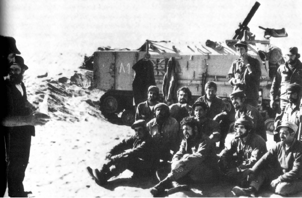

• פרק שני המתאר המבצע החב”די שהתנהל בעת מלחמת יום כיפור
אלפי חיילים עצובים ומדוכאים איישו מאות עמדות ומוצבים בגבולות הדרום והצפון לאחר מלחמת יום הכיפורים. אלפי חיילים נוספים גנחו מכאבים במחלקות בתי הרפואה ובתי השיקום ברחבי הארץ נוכח פציעותיהם במלחמה. הללו סבלו ייסורי גוף ונפש רבים – אל כולם הגיעו מאות חסידי חב”ד בשליחות הרבי כדי לעודד, לשמח ולהרים את המו
אלפי חיילים עצובים ומדוכאים איישו מאות עמדות ומוצבים בגבולות הדרום והצפון לאחר מלחמת יום הכיפורים. אלפי חיילים נוספים גנחו מכאבים במחלקות בתי הרפואה ובתי השיקום ברחבי הארץ נוכח פציעותיהם במלחמה. הללו סבלו ייסורי גוף ונפש רבים – אל כולם הגיעו מאות חסידי חב”ד בשליחות הרבי כדי לעודד, לשמח ולהרים את המוראל • תיאור מרתק של מבצע יום כיפור, משולב בהוראות הרבי, מופתים, דיווחי החסידים על המבצע, ודיווחי התקשורת שהתלהבה מהמבצע הגדול • פרק שני המתאר המבצע החב”די שהתנהל בעת מלחמת יום כיפור

קרבות מלחמת יום כיפורים שפרצו בעיצומו של היום הקדוש, נמשכו למעשה עד כ”ח בתשרי תשל”ד. שמונה עשרה ימים של קרבות עקובי דם בהם נהרגו אלפי חיילים. עם ישראל שידע ניצחון מזהיר במלחמת ששת הימים, לא הסכין לקבל את מחיר האבדות הכבד מנשוא. המורל הכללי היה שפוף, כך בעורף והרבה יותר מכך בחזית.
הסכם הפסקת האש שנחתם היה שברירי, ובחזית הדרומית וכן זו הצפונית הושארו אלפי חיילים דרוכים וערניים, הכן למצב חירום, במטרה למנוע הפתעה קשה נוספת כפי שחווה צה”ל עם פרוץ המלחמה. זו הסיבה שלמרות הפסקת האש, אלפי חיילים לא שבו לביתם ונותרו בגבולות, חשופים לגשמים ולרוחות החורף של שנת תשל”ד בגזרה הצפונית, ולסופות החול במדבר סיני.
נפילת החברים הקרובים יחד עם הריחוק מהבית וחוסר הוודאות, גרמו למורל נמוך ביותר בקרב החיילים המבודדים והמרוחקים. מי שחשב עליהם היה הרבי מה”מ שפתח במבצע יום הכיפורים (כפי שסופר בהרחבה בפרק הפותח) ושלח מאות חסידים אל החזית הדרומית והצפונית כדי להיפגש עם כל חייל וחייל, לשמחו לעודדו ולהפיח בו רוח של תקווה ואמונה. הרבי עצמו התווה את פעולות המשימה ב’יחידות’ מיוחדת שהתקיימה בחדרו הקדוש, ועמד בראש המערכה כשהוא מורה להעביר לו דוחו”ת מדויקים מהפעילות בשטח.
הוראות הרבי בוצעו לאלתר, וחוליות רבות של חסידי חב”ד יצאו בצורה מאורגנת ומסודרת לחצי האי סיני, לרמת הגולן, למחנות ובסיסי צה”ל בגבולות הארץ ובמרכזה. החסידים עזבו את בתיהם למשך ימים ארוכים כמו את מקום עבודתם כדי שיוכלו לבצע את ההוראה של הרבי ולהגיע גם אל המקומות המרוחקים ביותר בדרום ובצפון. הכבישים לא היו רחבים ונוחים כמו היום, וכך גם הרכבים. פלאפונים אף הם לא היו בגדר חלום, וניתוקם של החסידים מהבית היה מושלם. לנגד עיני החסידים עמדו הוראות הרבי וברכותיו, ובזכות כך גברו על כל הקשיים.
החיילים כמו גם המפקדים הזוטרים והבכירים קיבלו את החסידים בכל מקום במאור פנים. אפילו התקשורת הכללית שהרבתה לתקוף את שומרי המצוות, פרגנה ופרסמה ידיעות על אודות המבצע.
דווקא המשבר הגדול ורגעי השפל שהיו בתחילת המלחמה ובהמשכה, הביאו לכך שנוצרה התעוררות רוחנית רבה, וידי החסידים היו מלאות עבודה. הם הניחו תפילין לרבבות חיילים, חילקו אגרות אישיות מהרבי, שתו יחד ‘משקה’, ודרבנו את החיילים לכתוב לרבי.
כשהיה צריך, נכנסו החסידים גם לשיחות נפש עם החיילים שראו זה אך לא מזמן את המוות מול עיניהם. רבים מהחיילים נענו והסכימו להכשיר את המטבחים בבתיהם כמו גם לשמור שבת, ועוד.
“שלושה ימים ושלושה לילות סרקנו את כל העמדות”
הרב חנוך גליצנשטיין סיפר באותם ימים ל’ידיעות אחרונות’ על האווירה המיוחדת במבצע הגדול שיזם הרבי:
“בתחילה יצאנו לבסיסים שבפיקוד המרכז. חב”ד בירושלים לקחה על עצמה קטע זה מחזיתות צה”ל. כמאה איש נדדנו במשך שלושה ימים ושלושה לילות מבסיס לבסיס, ממחנה למשנהו ממוצב למוצב”.
הרב גליצנשטיין מוסיף ומספר על העזרה שקיבלו החסידים מהמפקדים: “אלוף הפיקוד וקצין החינוך הפיקודי עשו כל אשר לאל ידם כדי להקל על החוליות להגיע ליעדים ולבצע את המשימה. רכב, נהגים ליווי ואבטחה ניתנו ככל הדרוש. בכל מקום שהגענו אליו כבר ידעו המפקדים על בואנו והיו מוכנים לקבל אותנו”.
הרב גליצנשטיין מוסיף וסיפר לכתב העיתון על אופן הפעילות שהתבצעה: “תחילה נכנסנו לצריף המפקדה, הגשנו תפילין למפקדים ואיש לא התנגד. כולם הניחו תפילין. מסרנו לידיהם את החוברות עם דברי הרבי וברכתו, מזגנו כוסיות ‘משקה’ ושתינו ‘לחיים’ לחיי צה”ל ולניצחון מהיר על כל אויבי ישראל. חילקנו את המטבעות, האחד לצדקה בשם הרבי והשני לסגולה אישית ולאחר מכן יצאנו לשטח. המפקדים ריכזו את החיילים ואחד מאנשי החוליה החב”דית דיבר בפניהם והסביר את מטרת השליחות ואת משימת המבצע. סיפרנו לחיילים כי במשך כל ימי המלחמה לא ניתק הרבי את מחשבתו מארץ ישראל וממערכות המלחמה אף לא לשעה קלה, והתפלל בלי הרף למענם. בהמשך קראנו קטעים מדברי הרבי בהתוועדויות שקיים בכל חודשי הקיץ ושבהן רמז על האפשרות של מלחמה ועל הצורך להתכונן מבחינה מעשית ומבחינה רוחנית דתית כאחת לקראתה.
“בתשובה לשאלות הובהרה עמדת הרבי בבעיות השעה, המלחמה, השטחים ועוד. שוב נמזגו הכוסיות. שותים ‘לחיים’ עם כל חייל וחייל ומסבירים את ענין הצדקה והמטבעות שהרבי שלח להם. החיילים להוטים לשמור מטבע אחד לסגולה אישית ולקמיע בשעת סכנה ושואלים אם מותר לנקב חור כדי לתלותו על הצוואר. בעת שתיית ה’משקה’ מבקשים חיילים לדעת מה זה ‘כוס של ברכה’ ומה המשמעות של שתיית לחיים.
“אחרי השמעת דברי עידוד מתובלים בדברי תורה וסיפורים חסידיים, מגיעה ההתלהבות לשיאה. מעגלים רחבים משתלבים, מאות חיילים עם אברכי חב”ד, פוצחים בשיר ויוצאים במחול. כך נמשכים השירה והריקודים שעות רבות, במקרים מסוימים עד שעת לילה מאוחרת.
“בבקעת הירדן פעלנו כשישים איש, שהתפצלו בארבע עשר חוליות. במשך שלושה ימים ושלושה לילות סרקנו את כל העמדות ואת כל המחנות, חיילים חטפו את המטבעות, לגמו את ה’משקה’ ושתו בצמא את דברי הרבי, שרו ורקדו, השתתפו בערבי חב”ד ונהנו מחוויה”.
כלי התקשורת בדיווחים נרחבים מהחזית החב”דית
לוחמי ה’חזית’ החב”דית הירושלמית, היו ראש החץ למבצע הנרחב והמורכב שהתפרש על פני מחנות מרוחקים בדרום ובצפון. חסידי חב”ד הגיעו לכל המוצבים והמעוזים. בימים ובלילות הדהדו ניגוני שמחה חב”דיים בבסיסים ואפילו בעמדות הקדמיות והנידחות על גבול קווי הפסקת האש בצפון ובדרום.
החסידים בוססו את רגליהם בביצות שבין הטנקים והמטוסים; עלו על ספינות טילים וקומנדקרים ובכל מקום התקבלו בהוקרה ובשמחה גדולה.
התקשורת הכללית והחרדית פרסמה ידיעות רחבות וקצרות ובהן דיווחים וקוריוזים מהמבצע הגדול. ב’ידיעות אחרונות’ פורסמה סקירה רחבה שמתחילה בסיכום המבצע הנרחב:
“המבצע החב”די הגדול נשא אופי של מבצע צבאי מובהק. היעדים היו: כל זרועות צה”ל וחילותיו, ביבשה באוויר ובים, בכל חזיתות המלחמה – בסיני, במערב התעלה, [מעבר לתעלת סואץ – ש.ז.ב.], ברמת הגולן, בבקעת הירדן ובבסיסים שבמרכז הארץ.
“המשימה: ליצור מגע עם מפקדים ועם חיילים רבים ככל האפשר, ולהביא להם את דברו של הרבי וברכתו.
“כוח המשימה: ‘גדוד’ של צעירי חב”ד, שתוגבר על ידי עשרות צעירים המשרתים בצה”ל, שניצלו חופשות קצרות ממשימות מלחמתיות והתייצבו במפקדת המבצע, כדי לסייע להצלחתו. שירותי עזר בשטח, הובטחו על ידי המטכ”ל של צה”ל, קצין חינוך ראשי, הרבנות הצבאית הראשית ומפקדי החילות ומפקדים בשטח.
“המפקד הראשי: הרבי מליובאוויטש, שהפעיל את הכוחות ממפקדתו בניו יורק. הכל ‘דפק’ בתכנון יעיל ובדייקנות מופתית. סודיות מוחלטת אפפה את המבצע מראשיתו ועד סופו, כי כך ציווה הרבי.
“הפיקוד של צה”ל קיבל את הרעיון בהתלהבות, אם כי בגלל סיבות שהזמן גרמן חל עיכוב מה בביצוע הפעולות. לבסוף הובטח תיאום מלא. צה”ל העמיד לרשות חוליות חב”ד כלי רכב, אבטחה, ליווי והדרכה ואפילו טיסות מיוחדות לבסיסים מרוחקים.
“חב”ד הכינו רבבות חוברות עם “ברכת הרבי לחיילי ישראל”, עם שני המכתבים של הרבי בתוספת דברי תורה ומקצת מדעותיו של הרבי על המלחמה ומסקנותיה, על קדושת הארץ ועל החובה לשמור על שלימותה ועל בטחונה.
“תפילין, משקה, כוסיות, מגדנות ומטבעות הועמסו בארגזים על המכוניות והמטוסים – והמבצע החל. בפי המפקדים לא היו די מילים כדי להלל את אנשי חב”ד על מבצעם המופלא”.
מסתבר כי לא רק חסידים עזבו את בתיהם והרחיקו נדוד לשמח את החיילים, אלא גם נשות חב”ד נטלו חלק בפעילות, כפי שעולה מידיעה שהתפרסמה בעיתון ‘דבר’:
“נשי כפר חב”ד החלו אתמול בבוקר בחלוקת עוגות, ממתקים ומשקאות, לחיילי צה”ל בבסיסים השונים. חוליות של נשים יצאו לבסיסים בכלי רכב, נהוגים בידי אלה מחסידי חב”ד שלא גויסו. חוליות אחרות של חסידי חב”ד יצאו לבסיסים השונים וזיכו את החיילים במצוות הנחת תפילין”.
בעיתון ‘הצופה’ דווח על כמויות גדולות של כיבוד וגם על ריקודים ושירה עם החיילים:
“מאז תחילת המלחמה, יצאו חוליות של חסידי חב”ד לבסיסי צה”ל השונים, כשעמהם כמויות גדולות של כיבוד ומשקאות. החסידים כיבדו את החיילים וארגנו בכל מקום ומקום ריקודים ושירה בציבור”.
ואילו ב’מעריב’ בחרו להביא מופת גדול שאירע בעת מבצע ארבעת המינים בסיני על ידי החסיד מאיר פ., הלא הוא ר’ מאיר פריימן ע”ה:
“הברכה שהצילה. עקשנותו של חייל, חב”דניק, לזכות את חברו בברכת הלולב והאתרוג – הצילה את חיי החייל, שנאות לקיים את מצוות ‘4 המינים’.
“היה זה בחול המועד סוכות, בעיצומם של הקרבות בחזית התעלה. מאיר פ. נהג טנק מכפר חב”ד, עצר בשלב מסויים את הטנק שלו, לצרכי חימוש ותדלוק. בהפוגה הקצרה בין הפגזה להפגזה, מיהר מאיר לברך על האתרוג והלולב שהיו עמו בטנק. אחר כך הוא ביקש לזכות במצווה זו גם אחרים, כמצוות רבו, האדמו”ר מליובאוויטש.
“ניגש אפוא מאיר אל נהג משאית, שהובילה פגזים וחומר נפץ והציע לו לרדת מתא הנהג, כדי לברך על 4 המינים. ההוא סירב, אולם לא היה יכול לעמוד בשכנועו הנמרץ של החב”דניק, ירד איפוא מהמשאית שלו, ניגש יחד עם מאיר לשוחה סמוכה, במרק של כחמישים מטר ובירך על הלולב.
“באותו רגע הגיחו שני מיגים מצריים ואחת הפצצות שהטילו פגעה פגיעה ישירה בתא הנהג של המשאית. הנהג שירד לברך על הלולב ניצל ממוות בטוח…”
ד”ש מהעורף לחזית
לצד העיתונות שדיווחה על הדברים, נוצרה בהוויה של המלחמה ההיא גם ‘עיתונות פנימית’, כזו שמיועדת לחסידי חב”ד עצמם. טרום עידן הפקס והמייל, ביקשו החסידים לדעת את דעתו של הרבי על המלחמה והשלכותיה, ומה אומר הרבי בהתוועדות. מלבד זאת, היו חסידים שנשלחו לחזית עצמה כחיילים מן השורה, ואף הם התגעגעו לדעת מה קורה אצל הרבי.
הרב מאיר פריימן ע”ה, ששהה בחזית כנהג טנק, סיפר לימים על הגעגועים הללו לדעת שם, בחזית סיני, מה הרבי אומר בברוקלין הרחוקה: “אני שגויסתי מיד לחזית – הרגשתי ממש ציפייה עצומה לשמוע מה הרבי אומר. במאמצים רבים השתדלתי לאורך כל תקופת הגיוס ליצור קשר עם מישהו שיוכל לספר לי אם יש משהו מהרבי, וכשהיה משהו בעיתונים כל החבר’ה ביחידה היו רצים להראות לי.
“אני זוכר שהגיעו אלנו קטעי העיתונות שבהם היה כתוב על הנבואה של הרבי, שצפה את הכול מראש. באופן חריג אף שיגר הרבי בערב יום כיפור ‘מכתב כללי’ ‘לבני ובנות ישראל’, שם הבהיר הרבי ‘שבכל המלחמות שהיו לעם ישראל בכל תולדותיו יצאו היהודים כשידם על העליונה, וכך יהיה גם עתה עד ביאת המשיח, כנאמר בתפילת חנה ‘ה’ יחתו מריביו… ויתן עז למלכו וירם קרן משיחו’. מילים אלו נכתבו, כאמור, טרם פרוץ הקרבות, והיו נבואה של ממש. לא ייפלא אפוא, שעל אף שהיינו נתונים תחת אש צולבת פשוטו כמשמעו, זה נתן לי עצמי – ואני השתדלתי להעביר את זה לשאר החיילים – תחושת ביטחון, שבוודאי הרבי המתיק את הדינים, וה’מפי עוללים’ באמת יפעל ‘להשבית אויב ומתנקם’.
“גם שנים רבות אחרי, אני שומע תיאורים על מה שהתרחש בימים ההם ב-770. באותה שעה יכולתי רק להתגעגע ומפעם לפעם לשקוע במחשבות. הגעגועים לראות את הרבי והמחשבות מה קורה עכשיו ב-770 היו אתי כל הזמן, בעת ירי כבעת הפוגות. המחשבות הללו היו מקשה אחת עם הרצון להישאר בחיים, כמו שאומרים ‘לצאת מזה חי’ – בלי שום מליצות”.
באותם ימים יזם ר’ בערק’ה וולף, דובר חב”ד, עלון פנימי לאנ”ש ששהו בחזית, ובו דיווחים מחצרות קדשנו. העלון הודפס בתנאים פרימיטיביים ונכתב כולו בכתב יד, ויצא על ידי צעירי חב”ד בנחלת הר חב”ד בראשות ר’ ליפא קורצוויל ונערך על ידי ר’ יחזקאל סופר.
ביום י’ במר חשוון תשל”ד יצא העלון הראשון ובראשו ידיעה מרתקת:
“חברי הקונסוליה הישראלית בארצות הברית ב’הקפות’. בשיחה בת 45 דקות באמצע ההקפות שוחח אדמו”ר שליט”א עם אנשי הקונסוליה הישראלית וביקשם להעביר לממשלת ישראל את בקשתו ודרישתו, שיש לכבוש את דמשק. איש הקונסוליה ניסה ל”עדכן” את הרבי, שמדובר בשטח הררי וקשה לכיבוש מבחינה טופוגרפית, ואז פנה אדמו”ר שליט”א לאחד מעיתונאי חב”ד שהיה נוכח בשיחה, ואמר: “תשאלו אותו, איך אפשר לכבוש – בהליקופטרים”. אחר שיצאו מההקפות אמר איש הקונסוליה שהוא מעביר תיכף ומיד את תוכן דברי אדמו”ר שליט”א לרמטכ”ל – (נקוה לתוצאות)”.
בצד ימין של העלון, ישנה ידיעה המפרטת את הוראות הרבי למבצע עם החיילים, ובמרכז העלון שיחות הרבי אודות המלחמה.
תחת הכותרת: “חיל החימוש החב”די” מובאת הידיעה הבאה: “נערי בית ספר למלאכה בנחלת הר חב”ד יוצאים כמעט כל יום בשעות הפנויות (כתוצאה מגיוס מורים) למחנות צה”ל באזור ולבתי הבראה של פצועי צה”ל “ומחמשים” אותם בנשק אישי, רוחני – תפילין. למותר לציין את הצלחת המבצע וההיענות המירבית”.
הנה כמה שביבים מהגיליון השני, שיצא בי”ג חשוון תשל”ד.
“תענית הרבנות כפי שנראתה בנחלת הר חב”ד: ביום ב’ שעבר הורגשה תכונה בבית הכנסת (שאגב הוא מורחב, והשלב הנוסף יושלם בקרוב) היו כאלו שצמו, והיו גם מנינים שאפילו קראו ‘ויחל’, המניין של יצחק ביסק… ור’ אלתר… כל המניינים אמרו ‘אבינו מלכנו’.
“מצווה תציל ממוות. ר’ נפתלי קרביצקי המשרת אי שם, סיפר לנו מקרה אישי:
“ביום רביעי היתה לנו שעה פנויה ונפניתי להניח תפילין עם חברי לנשק. ניגשתי לחייל שעמד בשוחה וביקשתיו להניח תפילין. הוא יצא מהשוחה וניגש לאוהל בו התרכזו החיילים להנחת תפילין. כעבור 2 דקות הופיע מעלינו מיג והטיל פגע ישר לתוך השוחה, בה עמד חברי. היה זה נס גלוי”.
עוד בגיליון – דיווח על פעילות החסידים מנחלת הר חב”ד בבתי הבראה של חיילים באשקלון.
מבקרים את הפצועים ומחוללים ניסים
לצד המבצע הגדול שהתנהל בחזיתות ובמחנות צה”ל, התנהל במקביל מבצע נוסף בקרב החיילים הפצועים שאושפזו בבתי הרפואה השונים ברחבי הארץ כמו גם במרכזי השיקום. יותר משבעת אלפים פצועים נמנו במלחמה האיומה הזאת. רבים מהם נכוו כוויות קשות בכל חלקי גופם, רבים איבדו איברים בגופם, ועמם יחד עוד פצועים שחוו את מוראות המלחמה הקשים. הללו מלאו מחלקות שלמות בבתי הרפואה השונים, זועקים מכאב ומיוסרים בגופם ובנפשם.
חסידי חב”ד וכן נשי חב”ד יצאו אל המרכזים הרפואיים, שם ביקרו את החיילים, העניקו להם כיבוד ועודדו את רוחם.
על ביקור ועידוד החיילים החולים, כתב הרב אפרים וולף לרבי בו’ חשון תשל”ד:
“ר’ משה גרינברג [מנהל בית חב”ד] מבני ברק מספר כי מחזיק עתה שני אנשים בשכר, אשר מניחים תפילין בביה”ח תל השומר ויש תורים ארוכים להנחת תפילין וכן דרישה ל[רכישת] תפילין. וכן מהישיבה בכפר חב”ד מבקרים בביה”ח צריפין ובנחלת הר חב”ד החליטו לארגן ביקורים בבאר שבע, אשקלון ורחובות, וכן מסר [ר’ ראובן] דונין שבחיפה יש אברכים (אם כי לא מאנ”ש) אשר מתעסקים בזה. לירושלים פנינו לעסקנים במקום שיארגנו גם הדבר, וכן הרשת יארגן בין הבתי ספר שבקרבתם יש בתי חולים שהמורים יארגנו מבצע תפילין”.
ר’ שלמה מיידנצ’יק ביקר באותם ימים אצל העיתונאי דן מרגלית שנפצע בלחימה בקרבת תעלת סואץ. מאורעות המלחמה עוררו את נשמתו דן מרגלית והוא גילה לר’ שלוימק’ה כי קיבל על עצמו להפוך את המטבח שלו לכשר. ר’ שלוימקה מצידו ביקש ממנו שיניח תפילין בכל יום, והתשובה היתה חיובית בהחלט. מר מרגלית ביקש שילמדוהו כיצד מניחים תפילין.
מספר חודשים חלפו, ובחג השבועות שהה מרגלית ב-770 ואת רשמיו פרסם בעיתון ‘הארץ’.
חייל אחר אצלו ביקרו החסידים, שלח מכתב מרגש ובו סיפר כיצד הוא מתאושש במהירות בזכות התפילין וה’משקה’ של הרבי:
“אני פצוע קשה, הכאבים ברגל קשים מאוד. אתמול ביקרו אצלנו אנשי חב”ד, הביאו משקה מ’כוס של ברכה’ מהרבי וחילקו מטבעות למזכרת ולצדקה. לא שתיתי מיד. השארתי את ה’משקה’ למחרת היום. הבוקר התעוררתי משנתי הנחתי תפילין כעצת החב”דניקים, מסרתי את המטבע לצדקה ושתיתי ‘לחיים’ מ’המשקה’ של הרבי ומה אומר לכם? לא ייאמן. הכאבים ברגל חלפו. וכבר ביקשתי מהאחות שתנסה להורידני מהמיטה. אני בטוח שאוכל ללכת בשתי רגליי. אנא, כתבו תודה לרבי… הוא נפלא… הוא נפלא… הוא לא רק עודד את רוחי, הוא ריפא את רגליי”.
ועוד מופת מרתק:
יו”ר מועצת עמק לוד דאז, מר דוידוביץ, ביקר בתשרי אצל הרבי, וקיבל בקבוק ‘משקה’ כדי לחלקו במושב צפריה. בשובו לארץ הקודש שמע כי אחד מצעירי המושב צפריה נפצע קשה בקרבות שריון והוא מאושפז מחוסר הכרה. מיד עלה במחשבתו של מר דוידוביץ, כי אולי למקרה זה העניק לו הרבי את ה’משקה’ והוא מיהר לבקר את הפצוע.
בהגיעו אל הפצוע, סיפרו לו כי הצעיר נפגע מטיל ובשעת הפגיעה נעצר שעונו מלכת, וכך אפשר היה לקבוע את השעה המדויקת של פציעתו. לאחר מחשבה קצרה גילה מר דוידוביץ שבדיוק באותו יום ובאותה שעה מסר לו הרבי את בקבוק ה’משקה’.
כאשר סיפר זאת לרופא שטיפל בפצוע, הסכים לטפטף טיפה מהמשקה לתוך פיו של החייל, ולתדהמת הרופא פקח הפצוע את עיניו והכרתו חזרה אליו מיד…
“עד עתה הגיעו לכמה רבבות חיילים”
ממכתב שכתב הרב אפרים וולף ביום י”א בכסלו תשל”ד, בעיצומו של המבצע, ניתן לקבל אומדן על היקף המבצע בחלקו הראשון, במהלך חודש חשוון. המכתב נכתב בתום אסיפה שהתקיימה בענין המבצע:
“שלשום בערב התקיימה כאן [בישיבת תומכי תמימים לוד] אסיפה בקשר למבצע המכתבים והמטבעות בצבא, בהשתתפות ר’ שלמה מיידנצ’יק, ר’ שלום פלדמן, ר’ מענדל פוטרפס, ר’ משה סלונים, ר’ מאיר פרידמן, ר’ יוסף בלוי, ואני. בקשר למבצע דובר כי עד עתה הקיפו כמה רבבות חיילים, בו בזמן שיש הרבה הרבה למעלה מזה. סוכם לנסות לארגן מחדש הענין”.
• • •
כעבור עשרה ימים הגיעו מהרבי הוראות חדשות – להתכונן לקראת מבצע חנוכה בקרב חיילי צה”ל. בעקבות זאת קיבל המבצע כולו גוון חדש, ועל כך יסופר בפרקים הבאים.
מקורות: אגרות קודש, אלבום הרבי, חב”ד בישראל, הפרטיזן, ימי תמימים, ארכיון ר’ שמואל זלמנוב, בית משיח, חב”ד אינפו, דבר, מעריב, שערים, הצופה ועוד.
הרבי ומפקדי צה”ל בעת המלחמה
במהלך המלחמה נוצר ערוץ קשר ישיר בין הרבי ובין מספר מפקדים בכירים בצה”ל, בהם גם האלוף אריאל שרון, האלוף בנימין תלם ותת-אלוף מרדכי ציפורי.
עם פרוץ המלחמה הוחזר לשירות הצבאי אריאל שרון (ראש הממשלה) שהיה בעברו אלוף פופולרי ביותר. הוא פרש מצה”ל, וכשמצב הקרבות היה בכי רע, הוזעק וגויס מחדש כדי לעמוד בראש אוגדת השריון שפעלה בחצי האי סיני, הקרב בו התפרסם במלחמה זו הקרב שבמרכזו עמדה צליחת תעלת סואץ – פעולה שהכריעה את המלחמה לטובת עם ישראל.
כבר בימים הראשונים למלחמה שלח האלוף שרון פתק לרבי בו ביקש רחמים רבים נוכח המצב הקשה. במהלך המלחמה שלח אליו הרבי שליח מיוחד עם ברכות להצלחה. הרב יצחק גינזבורג הוא אשר התמנה לשליחות מיוחדת זו, ולימים סיפר על כך: “שרון היה בעיצומה של המערכה, הוא לא ישן כמה יממות וניכר עליו שהוא ממש בהתרוממות. מסרתי לו את ברכת הרבי, ויום למחרת הוא ניצח בקרב. היה זה בחג הסוכות ובבוקר הניצחון נתתי לו לולב ואתרוג. יש תמונה של שרון ביום הניצחון ההוא נוסע על הטנק כשלולב ואתרוג בידו. אני מקווה שהזכות הזו תעמוד לו”.
דברי הרבי בעת המלחמה לכבוש את שטחי האויב האסטרטגיים הגיעו גם למפקדים בכירים בצה”ל ובהם האלוף בנימין תלם מפקד חיל הים, ששיגר אל הרבי מכתב וקיבל תשובה (הודפסה באגרות קודש חלק כ”ח אגרת י’רמו). גם תת אלוף מרדכי ציפורי שהתמנה בעיצומה של המלחמה למפקד שריון ראשי, כתב שהתרשם ממכתב הרבי: “…תחושה טובה לדעת כי קיימת שותפות גורל ואחריות הדדית בין בני עמנו באשר הם שם”. ובהמשך שטח כמה שאלות אידיאולוגיות חשובות ועל כך הרבי השיבו במכתב ארוך ומפורט (נדפס באגרות קודש חלק כ”ח אגרת י’רמח), בה הרבי כותב על כך ששני אנשים הפועלים יחדיו הם “קומה אחת שלמה” ושליחותו של האדם בעולם להרבות בטוב.
“לנצל את המכתבים באופן יעיל וטוב”
לרגל מלחמת יום הכיפורים כתב הרבי מכתבים מיוחדים עבור עם ישראל בכלל וחיילי צה”ל בפרט. הרב ניסן מינדל מיהר לשלוח מכתבים אלו אל צעירי חב”ד בארץ בתוספת הוראה מפורשת: “לנצל את המכתבים באופן יעיל וטוב”.
נוכח הוראה זו, הודפסה חוברת כיס מיוחדת ובה מכתבי הרבי לצד תוספות הקשורות לימי המלחמה וכן מבצע תפילין. עשרות אלפי חוברות חולקו לחיילים על ידי חסידי חב”ד.
בשער החוברת, התנוססה תמונת הרבי ובתחתיתה הכיתוב: “לחיילי ישראל בברכה!
החוברת נפתחת בדברי הרבי לפני המלחמה ובעיצומה על אודות מסירות הנפש של החיילים.
מרכז החוברת מוקדש למכתבי הרבי כשבהמשך מובאים פסוקים מהתורה על אודות הבטחת הארץ הקדושה לעם ישראל. וכדי שהחיילים יוכלו להתפלל וללמוד, הודפסו בחוברת פרקי תהילים עב ופג, וכן מספר משניות מפרקי אבות, וציטטות מהמדרש והגמרא אודות חשיבות הנחת תפילין.
החוברת נחתמת בסיסמא מעניינת: “בחזית ובעורף ובכל מקום, הנח תפילין כל יום”.
במהלך המלחמה נוצר ערוץ קשר ישיר בין הרבי ובין מספר מפקדים בכירים בצה”ל, בהם גם האלוף אריאל שרון, האלוף בנימין תלם ותת-אלוף מרדכי ציפורי.
עם פרוץ המלחמה הוחזר לשירות הצבאי אריאל שרון (ראש הממשלה) שהיה בעברו אלוף פופולרי ביותר. הוא פרש מצה”ל, וכשמצב הקרבות היה בכי רע, הוזעק וגויס מחדש כדי לעמוד בראש אוגדת השריון שפעלה בחצי האי סיני, הקרב בו התפרסם במלחמה זו הקרב שבמרכזו עמדה צליחת תעלת סואץ – פעולה שהכריעה את המלחמה לטובת עם ישראל.
כבר בימים הראשונים למלחמה שלח האלוף שרון פתק לרבי בו ביקש רחמים רבים נוכח המצב הקשה. במהלך המלחמה שלח אליו הרבי שליח מיוחד עם ברכות להצלחה. הרב יצחק גינזבורג הוא אשר התמנה לשליחות מיוחדת זו, ולימים סיפר על כך: “שרון היה בעיצומה של המערכה, הוא לא ישן כמה יממות וניכר עליו שהוא ממש בהתרוממות. מסרתי לו את ברכת הרבי, ויום למחרת הוא ניצח בקרב. היה זה בחג הסוכות ובבוקר הניצחון נתתי לו לולב ואתרוג. יש תמונה של שרון ביום הניצחון ההוא נוסע על הטנק כשלולב ואתרוג בידו. אני מקווה שהזכות הזו תעמוד לו”.
דברי הרבי בעת המלחמה לכבוש את שטחי האויב האסטרטגיים הגיעו גם למפקדים בכירים בצה”ל ובהם האלוף בנימין תלם מפקד חיל הים, ששיגר אל הרבי מכתב וקיבל תשובה (הודפסה באגרות קודש חלק כ”ח אגרת י’רמו). גם תת אלוף מרדכי ציפורי שהתמנה בעיצומה של המלחמה למפקד שריון ראשי, כתב שהתרשם ממכתב הרבי: “…תחושה טובה לדעת כי קיימת שותפות גורל ואחריות הדדית בין בני עמנו באשר הם שם”. ובהמשך שטח כמה שאלות אידיאולוגיות חשובות ועל כך הרבי השיבו במכתב ארוך ומפורט (נדפס באגרות קודש חלק כ”ח אגרת י’רמח), בה הרבי כותב על כך ששני אנשים הפועלים יחדיו הם “קומה אחת שלמה” ושליחותו של האדם בעולם להרבות בטוב.